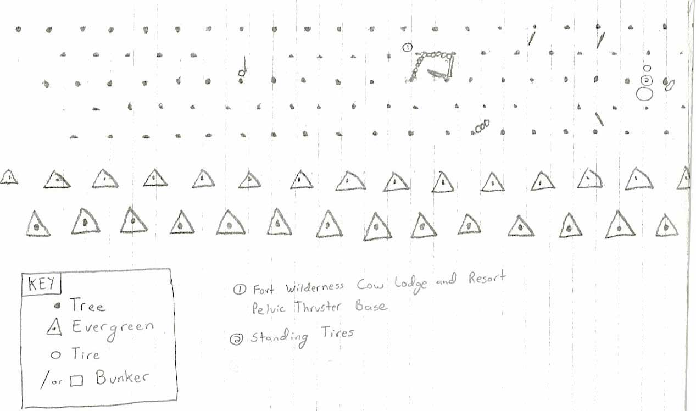
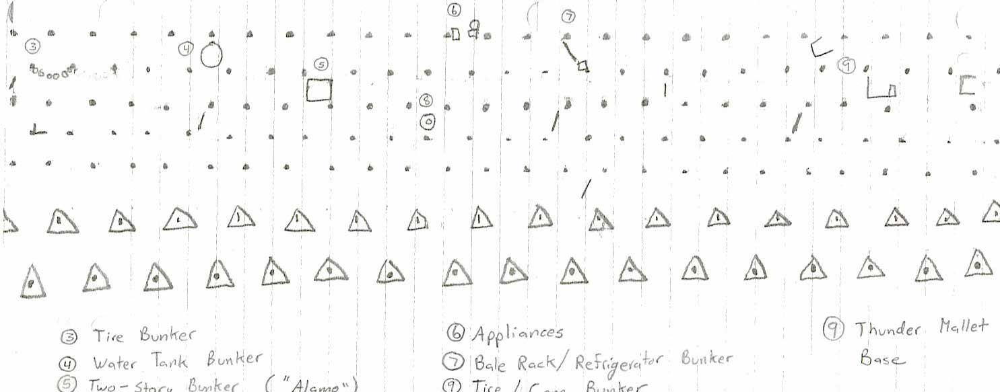

Fall 2003 Map
Map drawn by Daniel ("Angus")
 |
 |
Notes:
5 and 8 were cut off during scanning, they should read:
5 - Two-story Bunker ("Alamo")
8 - Tire/Cone Bunker
Pictures:
- Fort Wilderness Cow Lodge and Resort
Pelvic Thruster Base 1
2
- Standing Tires 1
- Tire Bunker 1
2
- Water Tank Bunker 1
2
- Two-story Bunker ("Alamo") 1
2
- Appliances 1
2
- Bale Rack/Refrigerator Bunker 1
- Tire/Cone Bunker 1
- Thunder Mallet Base 1
2
Back to fall pictures
Back to field menu